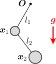
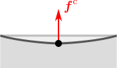
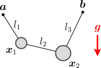
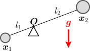

二重振り子の運動
𝒙1(𝑡),𝒙2(𝑡)
が知りたい。
多体系の拘束力 𝑭c を求めたい

二重振り子（右図）は、前章で扱った振り子に、もう1つおもりを追加したものである。おもりが2つあるので、第6章の場合と同様に、運動方程式をまとめて大文字で表す：（
𝑭
は重力、
𝑭c
は拘束力）
[𝑚100𝑚2]⏟__⏟__⏟𝑀[¨𝒙1¨𝒙2]⏟¨𝑿=[𝒇1𝒇2]⏟𝑭+[𝒇c1𝒇c2]⏟𝑭c∴𝑀¨𝑿=𝑭+𝑭c(1)
二重振り子の拘束条件は、「ひもの長さ
𝑙1,𝑙2
（同図）が一定」である：
𝑮(𝑿)≡[𝐺1𝐺2]≡[|𝒙1|−𝑙1|𝒙2−𝒙1|−𝑙2]=𝟎(2)
これは、「2つのおもりと2つの拘束条件」があるような問題となっている。
運動方程式(1)を解くために知る必要があるのは、これまで同様、拘束力
𝑭c
と、初期値
𝑿0,˙𝑿0
に対する拘束条件である。
𝑿0,˙𝑿0
に対する拘束条件は、今回も
𝑮=˙𝑮=𝟎
となる。問題は、拘束力
𝑭c
である。第6章でも述べたが、複数の物体がある系（＝多体系）では、各物体に対してダランベールの原理（＝拘束力は拘束面に垂直）を適用しただけでは、
𝑭c
の向きが決まらない。第5章では、作用・反作用の法則を用いてダランベールの原理を多体系に拡張したわけだが、今回も、それと同じような考察が必要となるはずである。
そこでこの章では、おもりの運動
𝑿𝑡
を計算するために、以下の3つの節に分けて議論を行う：8.1拘束力 𝑭c の向きが決まらない8.2多体系のダランベールの原理→ 𝑭c の導出8.3物体の運動 𝑿𝑡 の計算なお、8.2節では、時間に依存する拘束条件
𝑮(𝑡,𝑿)
の場合も考慮する。
8.1拘束力 𝑭c の向きが決まらない
第6章でボール同士の衝突を考えた際、各々のボールにダランベールの原理を適用すると、未定乗数の数が多くなりすぎるという問題があった。この節では、二重振り子の場合にも同じ問題が生じることを確認する。
8.1.1 𝑭c に対する拘束条件：式(3)
まず、初期値
𝑿0,˙𝑿0
に対する拘束条件は、これまでと同様に
𝑮=˙𝑮=𝟎
である。これらは、前章と同様に
𝑮(𝑿)=𝟎˙𝑮(𝑿)≡𝑑𝑮𝑑𝑿˙𝑿=𝟎⎫{
{⎬{
{⎭
となる。
後は、拘束力
𝑭c
が決まれば、運動方程式から運動が計算できる。
𝑭c
は、
𝑮=𝟎
の2階微分：
¨𝑮=𝟎(3)
を満たしさえすれば、拘束条件
𝑮=𝟎
は常に成立する。式(3)の成分は2つしかないので（式(2)）、これだけでは
𝑭c
を完全に決めることはできない（
𝑭c
は6成分なので、6つの条件が必要）。よって、拘束条件以外の物理的な条件を追加する必要がある。ここまでは、前章と同じである。
8.1.2各々の物体に対するダランベールの原理より式(4)→未定乗数が多すぎる
拘束力
𝑭c
に課すべき条件(3)に追加するものとして、各々の物体にダランベールの原理を適用することを考える。
まず、拘束力
𝑭c
は、
𝑖
番目の拘束条件
𝐺𝑖=0
に由来する拘束力
𝑭c𝑖
を足し合わせたものになる（力の加法性による）：
𝑭c=𝑭c1+𝑭c2(4)
ここで、物体ごとにダランベールの原理を適用することを考える。
𝑖
番目の物体が
𝑗
番目の拘束条件により受ける拘束力
𝒇c𝑖𝑗
の向きは、ダランベールの原理により拘束面に垂直、即ち、
∇𝑖𝐺𝑗
と平行である：
𝒇c𝑖𝑗=𝜆𝑖𝑗∇𝑖𝐺𝑗
𝜆𝑖𝑗
は未定乗数であり、
∇𝑖
は
𝒙𝑖
での偏微分
∇𝑖=(𝜕𝜕𝒙𝑖)T
である。
これらをまとめて書くと、式(4)は以下のようになる：
𝑭c=[𝒇c11𝒇c21]+[𝒇c12𝒇c22]=[𝜆1100𝜆21][∇1𝐺1∇2𝐺1]+[𝜆1200𝜆2″][∇1𝐺2∇2𝐺2]≡[𝜆1100𝜆21]∇𝐺1+[𝜆1200𝜆22]∇𝐺2(5)
ただし、
∇𝐺𝑖
は、
𝐺𝑖
を
𝑿
で微分したものである：
∇𝐺𝑖≡[∇1𝐺𝑖∇2𝐺𝑖]≡𝑑𝐺𝑖𝑑𝑿T
最後の式は、括弧をつけて
(𝑑𝐺𝑖𝑑𝑿)T
としたほうが誤解がないが、後で見づらくなるので括弧は省略する。
式(5)の未定乗数
𝜆𝑖𝑗
を全て決めれば拘束力
𝑭c
が決まる。しかし、式(5)の
𝜆𝑖𝑗
の数は「物体の数」×「拘束条件の数」なのに対し、式(3)は「拘束条件の数」しか存在しないため、
𝜆𝑖𝑗
を一意的に決めるには足りない。
8.1.3ダランベールの原理は式(6)のように拡張できるのではないか
この状況は、ボール同士の衝突（第6章）の場合と同じである。ボール同士の衝突では、作用・反作用の法則により、両方のボールの未定乗数が等しくなり（
𝜆1=𝜆2
）、拘束力は
𝑭c=𝜆∇𝐺
という形に書けたのだった。もし今回も、同様の関係式
𝜆1𝑗=𝜆2𝑗
が成り立つとすれば、式(5)は、以下の形で書けることになる：
𝑭c=𝜆1∇𝐺1+𝜆2∇𝐺2=[∇𝐺1∇𝐺2][𝜆1𝜆2]≡𝑑𝑮𝑑𝑿T𝝀(6)
そうすれば、未知数は
𝝀
のみとなり、その成分数は、拘束条件(3)の数と一致するので、
𝑭c
が決まることになる。
式(6)は成立するだろうか。確かに、拘束運動と衝突は似ており、実際、衝突が連続的に生じているのが拘束運動であると見なすこともできるので、同様の式が成立している可能性はある。しかし、第6章で扱ったのは、球対称なボールの衝突という特殊な状況に過ぎない。式(6)は、考え得る中で最も単純な形をしているが、果たしてそう上手くいくのだろうか。これを次節で考える。式(5)の微分を実際に実行して、振り子の各ひもに対して作用・反作用の法則を使うと、確かに式(6)が成り立つことが言える。しかしここでは、二重振り子に限らない一般論として示したい。
8.2多体系のダランベールの原理→ 𝑭c の導出
この節では、式(6)が確かに成立することを見た後、拘束力
𝑭c
を与える公式(22)を示す。
8.2.1拘束力 𝑭c は、運動エネルギー(9)を変化させない
拘束された運動においても、ボール同士の衝突（第6章）における弾性衝突と同じように、「運動の勢い」が保存していると考えられる。実際、2重振り子の例をイメージしても分かるように、全体の運動がどんどん激しくなっていったり、減衰して止まったりすることは考えづらい。とりあえず簡単のため、外力
𝑭
（＝拘束力以外の力、例えば重力や摩擦力）がゼロで、拘束条件も時間に依存しない場合を考えている。拘束条件(3)を満たすような勝手な拘束力
𝑭c
を取ると「運動の勢い」は保存しなくなるので、「運動の勢い」の保存則は、何らかの新しい条件を与えることになる。
では、「運動の勢い」とはどのように定量化されるのだろうか。それを探るため、ダランベールの原理(6)が成り立つと仮定してみて、候補となる保存量が存在するかを調べることにしよう。まず、式(6)より、運動方程式(1)は以下の形になる：（
𝑭=𝟎
としている）
𝑀¨𝑿=𝑑𝑮𝑑𝑿T𝝀(7)
これが正しいのであれば、この式から、「運動の勢い」に対応するような保存量が導けるはずである。「運動の勢い」は、拘束条件
𝑮
とは無関係に定義出来るはずなので、上式から
∇𝑮
を消すことを考える。これは簡単で、
˙𝑿T
を左から掛ければよい。実際、拘束条件
𝑮=𝟎
の微分（
𝑮
は時間によらないとする）
˙𝑮≡𝑑𝑮𝑑𝑿˙𝑿=𝟎(8)
を用いれば、式(7)の右辺が消える：（公式
𝐴T𝐵T=(𝐴𝐵)T
を使う）
˙𝑿T(右辺)=˙𝑿T𝑑𝑮𝑑𝑿T𝝀=(𝑑𝑮𝑑𝑿˙𝑿)T𝝀=0
よって、左辺のみが残る：
˙𝑿T𝑀¨𝑿=0
この式の左辺を変形すると
(左辺)=𝑑𝑑𝑡(12˙𝑿T𝑀˙𝑿)=𝑑𝑑𝑡(12𝑚1|˙𝒙1|2+12𝑚2|˙𝒙2|2)
となる。これが
0
となるのだから、赤字部分を
𝐸
：
𝐸=12𝑚1|˙𝒙1|2+12𝑚2|˙𝒙2|2(9)
とおくと、
𝐸
は保存する：
˙𝐸=0(10)
𝐸
を運動エネルギーという。
それらしき量が出てきたが、この
𝐸
は本当に「運動の勢い」を表しているのだろうか。少なくとも、一方のおもりが静止している場合には、
𝐸
が保存すれば、もう一方のおもりの速度の大きさが保存することになるのでもっともらしい。第6章でボール同士の衝突を扱った際、弾性衝突は「運動の勢い」が保存するような衝突であった。従って、ボール同士の衝突の際にも
𝐸
が保存することが期待されるが、これは実際に保存していることを示すことができる（以下の【8.2-注1】）。そこで、
𝐸
は「運動の勢い」を表していることを認めることにしよう。つまり、拘束力
𝑭c
は、運動エネルギー
𝐸
を保存するように働く。今は物体の個数が2つだけだが、式(9)の項を増やすことで、より多くの物体がある場合にも自然に一般化できる。
ところで、例えば、重力下での振り子の場合、おもりの速度の大きさは時間とともに変化するので、運動エネルギーは保存していない。しかし、全体としては周期的な運動を繰り返すのだから、運動が減衰しているわけではないように見える。この場合でも、何らかの保存則が成り立っているではないだろうか。これは実際に正しく、重力下の運動では、運動エネルギーに「ポテンシャルエネルギー」と呼ばれる項を加えたものが保存する（以下の【8.2-注2】）。
【8.2-注1】ボール同士の弾性衝突は、運動エネルギー 𝐸 を保存する
2つのボールの弾性衝突において、式(9)で定義される運動エネルギー
𝐸
は、変化しない：
𝐸=const.(11)
第6章では、弾性衝突条件として
|˙𝒙1−˙𝒙2|=const.
を用いたが、その代わりに、エネルギー保存(11)を弾性衝突条件として採用しても、衝突後の速度を正しく計算できる。
導出の概要
導出は、弾性衝突の公式（第6章の【6.2-注2】）を、式(9)に実際に代入するだけである。すると、面倒な計算の後に
12𝑚1|𝒙1,out|2+12𝑚2|𝒙2,out|2=12𝑚1|𝒙1,in|2+12𝑚2|𝒙2,in|2
が導ける。
◼
【8.2-注2】力学的エネルギー
重りが1つだけで、重力と拘束力のみが働いている場合、力学的エネルギー
𝐸
：
𝐸=12𝑚|˙𝒙|2⏟運動エネルギー−𝑚𝒈T𝒙|˙𝒙|2⏟ポテンシャルエネルギー
が保存する。拘束条件は時間に依存しないとする。
𝒈
は重力加速度である。
導出
運動方程式は
𝑚¨𝒙=𝑚𝒈+𝒇c
である。両辺に
˙𝒙T
を左乗すると、拘束力
𝒇c
の項が消えて、微分を括りだせる：
𝑚˙𝒙T¨𝒙=𝑚˙𝒙T𝒈∴𝑑𝑑𝑡(12𝑚|˙𝒙|2)=𝑑𝑑𝑡(𝑚𝒙T𝒈)∴𝑑𝑑𝑡(12𝑚|˙𝒙|2−𝑚𝒙T𝒈)⏟____⏟____⏟𝐸=0◼
補足
ポテンシャルエネルギーは重力に逆らって上に行くほど大きくなる。逆に、運動エネルギーは上に行くほど小さくなるので、足し合わせたものが一定になっているわけである。
なお、ポテンシャルエネルギーは重力以外の力
𝒇
でも存在することがある。ポテンシャルエネルギーが存在するための必要十分条件が知られている。それは、
𝒇
が時間に依存せず
⎡⎢
⎢⎣𝜕𝑦𝑓𝑧−𝜕𝑧𝑓𝑦𝜕𝑧𝑓𝑥−𝜕𝑥𝑓𝑧𝜕𝑥𝑓𝑡−𝜕𝑦𝑓𝑥⎤⎥
⎥⎦=𝟎
を満たすことである（詳しくは第15章の15.2節参照）。これが成り立つ時、
𝒇=−∇𝑉
となるような
𝑉(𝒙)
が存在し、
𝑉(𝒙)
がポテンシャルエネルギーになる。
8.2.2拘束力 𝑭c は拘束条件のミクロな破れによって生じる
上述のように、拘束力
𝑭c
は、運動エネルギー
𝐸
を保存するように働く。しかし、
˙𝐸=0
という1つの条件だけでは、式(5)からダランベールの原理(6)：（再掲）
𝑭c=𝑑𝑮𝑑𝑿T𝝀(12)
は導けない。
𝑭c
の性質について、もう少し考察する必要がある。

まず、拘束条件
𝑮=𝟎
は、ミクロに見れば、運動に応じてほんのわずかだけ実際には破れているはずである。拘束力は本来、そのミクロな破れを押し戻そうとする力である（右図の
𝒇c
）。これは例えば、硬いバネを変形させた時、変形に応じて元に戻ろうとする力が働くのと同様である（バネを非常に硬くしていったものが拘束だと考えてもよいだろう）。よって、拘束面上の同一点において
拘束条件のミクロな破れ方が同じであれば、𝑭cは等しい(13)
と言えそうである。これを認めることにしよう。これは、
𝑭c
が、拘束のミクロな破れの量にのみ依存し、物体の速度や外力には直接依存しないということである。もちろん、速度や外力が大きいと
𝑭c
も大きくなる傾向があるが、それは、その方が拘束がより大きく破れるからであって、速度や外力に直接依存しているからではない。
8.2.3多体系のダランベールの原理：式(12)
以上で予備的な考察が終わったので、ここからは、外力
𝑭
があってもよいとする。拘束面上の1点
𝑿
において、ある拘束力
𝑭c
を与える「拘束条件の破れ」を
𝛿
とおく。
𝛿
が等しい全ての
˙𝑿,𝑭
に対し、拘束力は同じ値
𝑭c
を取ることになる。速度
˙𝑿
は、拘束条件(8)：（再掲）
𝑑𝑮𝑑𝑿˙𝑿=𝟎(14)
を満たす全ての
˙𝑿
を取ることができる。そして、これら全ての
˙𝑿
に対して、
𝑭c
は運動エネルギー
𝐸
を変化させない。式(10)の導出で見たように、
𝐸
が変化しないのであれば、
𝑭c
は
˙𝑿
と垂直となる：
˙𝑿T𝑭c=0(15)
以上により、拘束力
𝑭c
に対する条件をまとめると、「式(14)を満たす全ての速度
˙𝑿
に対して、式(15)が成立する」、となる。そのような
𝑭c
は、式(12)の形以外にはあり得ない（以下の【8.2-注3】参照）。以上により、ダランベールの原理(12)が導かれた。
この議論の仕組みについて、見直しておこう。そもそも、
˙𝐸=0
だけからダランベールの原理(12)が得られなかったのは、1つの運動に対する
˙𝑿
のみを考えていたからである。性質(13)を使うことにより、同じ
𝑭c
に対し、拘束条件を満たす全ての
˙𝑿
を考えることができるようになった。それら全ての
˙𝑿
に対して、
𝑭c
が運動エネルギーを変化させないという条件から、式(12)が得られたのである。
【8.2-注3】拘束力の向き
行列
𝐴
が与えられているとする。拘束条件
𝒙T𝐴=𝟎(16)
を満たす全てのベクトル
𝒙
について
𝒙T𝑭=0(17)
が成り立つならば、ベクトル
𝑭
は、以下の形で書ける：（
𝝀
は未定乗数）
𝑭=𝐴𝝀(18)
証明
まず、「式(16)を満たす
𝒙
が張る空間」の基底ベクトルを列に持つ行列を
𝐴⟂
とおく。すると、
𝑭
は、
𝐴,𝐴⟂
の列の線型結合で表せる：
𝑭=𝐴𝝀+𝐴⟂𝝀⟂(19)
式(16)と式(17)より、
𝐴T⟂𝐴=0
と
𝐴T⟂𝑭=0
が成り立つことを用いると、式(19)の両辺に
𝐴T⟂
を左乗したものは
𝟎=𝟎+(𝐴T⟂𝐴⟂)𝝀⟂
となる。
(⋯)
部分は逆行列を持つので、その逆行列を左乗すれば
𝝀⟂=𝟎
となる。よって、式(19)は式(18)に一致する。
◼
8.2.4拘束条件が時間変化する場合も、ダランベールの原理(12)は成り立つ
ここまでは、拘束条件が時間変化しない場合を考えた。時間変化する拘束条件
𝑮(𝑡,𝑿)=𝟎
の場合であっても、拘束力
𝑭c
は、拘束の破れにのみ依存し、拘束面の移動速度には直接依存しない。よって、拘束の時間変化を直接考える必要はない。ただしこの場合は、速度
˙𝑿
に拘束面の移動速度が含まれるため、
𝑭c
と
˙𝑿
は垂直でなくなる。そのため、式(15)はそのままでは成り立たないが、代わりに、
˙𝑿
を、拘束面に沿ったベクトル
𝛿𝑿
に置き換えたものが成立する：
𝛿𝑿T𝑭c=0(20)
また、
𝛿𝑿
が拘束面上にあるという条件は、以下のように書ける：
𝜕𝑮𝜕𝑿𝛿𝑿=𝟎(21)
𝛿𝑿
は、考えている時刻における拘束面の形状のみから決まり、移動速度とは無関係である。
𝑮
が時刻に依存しない場合には、
𝛿𝑿
と
˙𝑿
は、取り得る方向が一致する。
以上により、拘束力
𝑭c
に対する条件は、「式(21)を満たす全ての
𝛿𝑿
に対して、式(20)が成立する」、となる。よって結局、
˙𝑿
を
𝛿𝑿
に置き換えるだけの同じ議論により、
𝑮
が時間変化する場合もダランベールの原理(12)が成り立つことが分かる。
8.2.5拘束力 𝑭c ：式(22)
拘束力
𝑭c
を求めるには、ダランベールの原理(12)の未定乗数
𝝀
を求めればよいわけだが、「
𝝀
の成分数」と「拘束条件
𝑮
の要素数」が等しいので、拘束条件と連立してやれば、
𝝀
は一意的に決まる。よって、式(12)の拘束力
𝑭c
が確定する。
実際に
𝑭c
を計算すると、
𝑮
が時間に依存する場合も含めて、以下の【8.2-注4】の式(22)のようになる。これが、一般的な拘束力
𝑭c
の公式である。運動方程式に代入したものを書き下しても良いが、きれいになるわけでもないので省略する。前章の【7.2-注3】のように、射影行列を使って運動方程式を書くこともできる。
【8.2-注4】多体・多拘束での拘束力 𝑭c ：式(22)
拘束条件
𝑮(𝑡,𝑿)=𝟎
のもとで、拘束力
𝑭c
は以下のようになる：
𝑭c=𝜕𝑮𝜕𝑿T𝝀𝝀≡−𝑊−1[(𝑑𝑑𝑡𝜕𝑮𝜕𝑿)˙𝑿+𝜕𝑮𝜕𝑿𝑀−1𝑭+𝑑𝑑𝑡𝜕𝑡𝑮]𝑊≡𝜕𝑮𝜕𝑿𝑀−1𝜕𝑮𝜕𝑿T(22)
ただし、
𝑭
は重力などの外力である。単なる記法の問題であるが、
𝜕𝑮𝜕𝑿
を偏微分にしているのは、
𝑮
が時刻
𝑡
にも依存する場合を考慮しているからである。
𝑡
に依存しない場合は全微分
𝑑𝑮𝑑𝑿
と表記すればよい。
導出
拘束条件の2階微分
¨𝑮=𝟎
を実行すると、動く振り子の場合（第7章の【7.4-注2】）と同様に、以下のようになる：
𝟎=𝑑𝑑𝑡˙𝑮=𝑑𝑑𝑡(𝜕𝑡𝑮+𝜕𝑮𝜕𝑿˙𝑿)=𝑑𝑑𝑡𝜕𝑡𝑮+(𝑑𝑑𝑡𝜕𝑮𝜕𝑿)˙𝑿+𝜕𝑮𝜕𝑿¨𝑿
この式に、ダランベールの原理(12)を適用した運動方程式：
𝑀¨𝑿=𝑭+𝜕𝑮𝜕𝑿T𝝀
を代入して
¨𝑿
を消去すれば、
𝝀
について解くことができ、式(22)のものに一致する。
8.3物体の運動 𝑿𝑡 の計算
以上で、必要な議論がそろった。この節では、まず、拘束条件がある場合の運動
𝑿𝑡
の計算方法についてまとめる。その後、具体的な例として、ディアボロ（2物体1拘束）、2重振り子（2物体2拘束）、シーソー（2物体4拘束）について、数値計算を行う。
8.3.1物体の運動 𝑿𝑡 の計算方法
複数の物体
𝑿
に、複数の拘束条件
𝑮(𝑡,𝑿)=𝟎
が課されているとする（
𝑡
は拘束条件が時間に依存する場合に必要）。物体の運動
𝑿𝑡
を計算するには、まず、
𝑡=0
において拘束条件：
𝑮(𝑡,𝑿)=𝟎˙𝑮(𝑡,𝑿)≡𝜕𝑡𝑮+𝜕𝑮𝜕𝑿˙𝑿=𝟎⎫{
{⎬{
{⎭(23)
を満たすような初期値
𝑿0,˙𝑿0
を設定する。その後の時間発展は、運動方程式
𝑀¨𝑿=𝑭+𝑭c(24)
によって計算できる。ただし、
𝑭
は重力などの外力であり、拘束力
𝑭c
は式(22)で与えられる。
8.3.2【例題1】ディアボロ：初期条件(25)、運動方程式(26)

まず、2つの物体に1つの拘束条件が課せられている例として、右図のようなディアボロの運動を考える。
𝒂,𝒃
は固定点であり、ひもの全長
𝐿≡𝑙1+𝑙2+𝑙3
が一定となる（ひもはたるまない）。また、重力が働いているとする。
拘束条件
𝐺
およびその微分は、以下のようになる：
𝐺(𝑿)≡|𝒙1𝑎|+|𝒙12|+|𝒙2𝑏|−𝐿∵⎧{
{⎨{
{⎩𝒙1𝑎=𝒙1−𝒂𝒙12=𝒙1−𝒙2𝒙2𝑏=𝒙2−𝒃𝑑𝐺𝑑𝑿T=∇𝐺=[̂𝒙1𝑎+̂𝒙12̂𝒙2𝑏−̂𝒙12]∵公式∇|𝒙|=̂𝒙（【4.3-注1】）𝑑𝑑𝑡𝑑𝐺𝑑𝑿T=⎡⎢
⎢
⎢
⎢⎣1−̂𝒙1𝑎̂𝒙T1𝑎|𝒙1𝑎|˙𝒙1+1−̂𝒙12̂𝒙T12|𝒙12|˙𝒙121−̂𝒙2𝑏̂𝒙T2𝑏|𝒙2𝑏|˙𝒙2−1−̂𝒙12̂𝒙T12|𝒙12|˙𝒙12⎤⎥
⎥
⎥
⎥⎦∵𝑑̂𝒙𝑑𝑡の計算：【8.3-注1】
これを用いると、初期値
𝑿0,˙𝑿0
が満たすべき拘束条件(23)は
|𝒙1𝑎|+|𝒙12|+|𝒙2𝑏|=𝐿̂𝒙T1𝑎˙𝒙1+̂𝒙T12˙𝒙12+̂𝒙T2𝑏˙𝒙2=𝟎}(25)
となる。運動方程式(24)についても、
𝑭
に重力を代入し、拘束力
𝑭c
に式(22)を代入して計算していくと、以下のようになる：
[𝑚1¨𝒙1𝑚2¨𝒙2]=[𝑚1𝒈𝑚2𝒈]+𝜆[̂𝒙1𝑎+̂𝒙12̂𝒙2𝑏−̂𝒙12]𝜆≡−𝛼+(̂𝒙1𝑎+̂𝒙2𝑏)T𝒈𝑚−11∣̂𝒙1𝑎+̂𝒙12∣2+𝑚−12∣̂𝒙2𝑏−̂𝒙12∣2𝛼≡˙𝒙T11−̂𝒙1𝑎̂𝒙T1𝑎|𝒙1𝑎|˙𝒙1+˙𝒙T121−̂𝒙12̂𝒙T12|𝒙12|˙𝒙12+˙𝒙T21−̂𝒙2𝑏̂𝒙T2𝑏|𝒙2𝑏|˙𝒙2(26)
数値計算を行うと、右図のようになる。
【8.3-注1】単位ベクトルの微分公式
単位ベクトル
̂𝒙
の微分は
𝑑𝑑𝒙̂𝒙=1−̂𝒙̂𝒙T|𝒙|(27)
となる。時間微分については、以下のようになる：
𝑑𝑑𝑡̂𝒙=1−̂𝒙̂𝒙T|𝒙|˙𝒙(28)
式(27)は幾何学的にも自然である。実際、微小変位
𝛿𝒙
における
̂𝒙
の変化
𝛿̂𝒙
は、1次近似により
𝛿̂𝒙≐𝑑̂𝒙𝑑𝒙𝛿𝒙
となるので、
𝛿𝒙
を「
|𝒙|
で割った」うえで「
𝒙
と垂直な方向へ直交射影」したものになることを示している。
導出
式(27)は、
𝛿̂𝒙
の1次近似における
𝛿𝒙
の係数である：
𝛿̂𝒙=𝛿(1|𝒙|𝒙)∣積の微分公式：𝛿(𝐴𝐵)≐(𝛿𝐴)𝐵+𝐴(𝛿𝐵)≐(𝛿1|𝒙|)𝒙+1|𝒙|𝛿𝒙∣
∣
∣
∣
∣連鎖律：𝛿𝑓−1≐𝑑𝑓−1𝑑𝑓𝛿𝑓=−1𝑓2𝛿𝑓において𝑓=|𝒙|とおく≐(−1|𝒙|2𝛿|𝒙|)𝒙+𝛿𝒙|𝒙|∣𝛿|𝒙|≐̂𝒙T𝛿𝒙（【4.3-注1】）≐(−1|𝒙|2̂𝒙T𝛿𝒙)𝒙+𝛿𝒙|𝒙|∣𝛿𝒙を括り出す=1−̂𝒙̂𝒙T|𝒙|𝛿𝒙(29)
式(28)は、合成関数の微分の連鎖律
𝑑𝑑𝑡̂𝒙=𝑑̂𝒙𝑑𝒙𝑑𝒙𝑑𝑡
に、式(27)代入するだけである。
◼
8.3.3【例題2】二重振り子：初期条件(30)、運動方程式(31)
次に、2つの拘束条件を持つような例として、右図のような二重振り子の運動を考える。ひもの長さ
𝑙1,𝑙2
がそれぞれ一定である。
拘束条件
𝑮
およびその微分は、以下のようになる：
𝑮(𝑿)≡[𝐺1𝐺2]≡[|𝒙1|−𝑙1|𝒙12|−𝑙2]∵𝒙12=𝒙1−𝒙2𝑑𝑮𝑑𝑿T=[∇𝐺1∇𝐺2]=[̂𝒙1−̂𝒙12𝟎−̂𝒙12]∵∇|𝒙|=̂𝒙（【4.3-注1】）𝑑𝑑𝑡𝑑𝑮𝑑𝑿T=[𝑙−11˙𝒙1𝑙−12˙𝒙12𝟎−𝑙−12˙𝒙12]∵𝑑𝑑𝑡̂𝒙1=𝑑𝑑𝑡𝒙1𝑙1=˙𝒙1𝑙1
これを用いると、初期値
𝑿0,˙𝑿0
が満たすべき拘束条件(23)は
|𝒙1|=𝑙1|𝒙12|=𝑙2𝒙T1˙𝒙1=0𝒙T12˙𝒙12=0⎫{
{
{⎬{
{
{⎭(30)
となる。運動方程式(24)についても、
𝑭
に重力を代入し、拘束力
𝑭c
に式(22)を代入して計算していくと、以下のようになる：
[𝑚1¨𝒙1𝑚2¨𝒙2]=[𝑚1𝒈𝑚2𝒈]+[̂𝒙1̂𝒙12𝟎−̂𝒙12]𝝀𝝀≡−𝑚1𝛼−𝛽2[𝛼𝛽𝛽1][𝑙−11|˙𝒙1|2+̂𝒙T1𝒈𝑙−12|˙𝒙12|2]𝛼≡1+𝑚1𝑚2,𝛽≡−̂𝒙T1̂𝒙12(31)
なお、第9章の9.2節で、この方程式を極座標で書き直す。
数値計算を行うと、右図のようになる。
8.3.4【例題3】シーソー：初期条件(32)、運動方程式(33)

最後に、4つの拘束条件を持つような例として、右図のようなシーソーを考える。棒の長さ
𝑙1,𝑙2
がそれぞれ一定であり、支点を原点
𝑂
とする（支点の周りを3次元的に動ける）。また、重力が働いているとする。
拘束条件
𝑮
およびその微分は、以下のようになる：（
𝑮
の成分数は4）
𝑮(𝑿)≡[𝐺1𝑮2]≡[|𝒙1|−𝑙1𝑙2𝒙1+𝑙1𝒙2]𝑑𝑮𝑑𝑿T=[̂𝒙1𝑙2𝐼𝟎𝑙1𝐼]𝑑𝑑𝑡𝑑𝑮𝑑𝑿T=[𝑙−11˙𝒙10𝐼𝟎0𝐼]
𝐺1=0
は、
𝒙1
側の棒の長さが
𝑙1
であることを要請し、
𝐺2=0
は、
𝒙2
の位置が
𝒙2=−𝑙2𝑙1𝒙1
であることを要請している。また、
𝐼
は
3×3
の単位行列である。
これを用いると、初期値
𝑿0,˙𝑿0
が満たすべき拘束条件(23)は
|𝒙1|=𝑙1𝑙2𝒙1+𝑙1𝒙2=𝟎̂𝒙T1˙𝒙1=0𝑙2˙𝒙1+𝑙1˙𝒙2=𝟎⎫{
{
{⎬{
{
{⎭(32)
となる。運動方程式(24)についても、
𝑭
に重力を代入し、拘束力
𝑭c
に式(22)を代入することにより以下のようになる：
[𝑚1¨𝒙1𝑚2¨𝒙2]=⎡⎢
⎢
⎢
⎢⎣𝑚1(1−̂𝒙1̂𝒙T1)𝒈1−𝑚1|˙𝒙1|2𝑙1̂𝒙1𝑚2(1−̂𝒙2̂𝒙T2)𝒈2−𝑚2|˙𝒙2|2𝑙2̂𝒙2⎤⎥
⎥
⎥
⎥⎦𝒈1≡𝑙1𝑚1𝑙1−𝑚2𝑙2𝑚1𝑙21+𝑚2𝑙22𝒈𝒈2≡−𝑙2𝑚1𝑙1−𝑚2𝑙2𝑚1𝑙21+𝑚2𝑙22𝒈(33)
それぞれのおもりに着目すると、振り子の運動方程式（第7章の7.3節）と同じ形になっている。ただし、重力加速度の部分が
𝒈
よりも小さくなる。特に、シーソーが釣り合うのは、
𝑚1𝑙1=𝑚2𝑙2
の時である（
𝒈1=𝒈2=𝟎
となる）。この釣り合い条件を応用したのが、てこの原理である。即ち、
𝑚1
が非常に大きくても、
𝑙1≪𝑙2
としてやれば、小さな
𝑚2
を乗せるだけで（＝小さな力を加えるだけで）、
𝑚1
を持ち上げることができる（右図）。
数値計算を行うと、右図のようになる。同図左のグリッドの間隔は
1m
である。